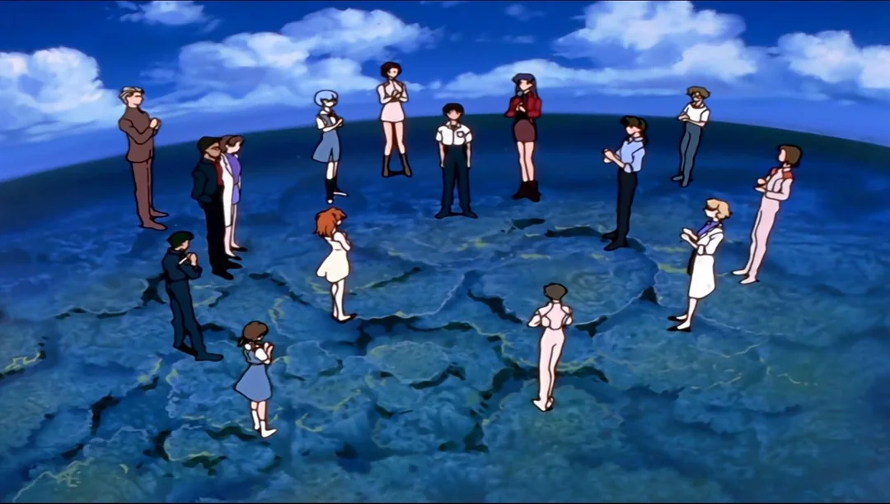
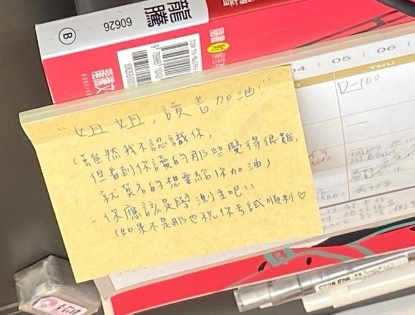

一段關於理想、現實與成長的旅程
本文闡述考試時的心境轉變，內容經多次更新，流暢度和連貫性可能有所不足，敬請見諒。
先祝各位考生都能夠考上理想的學校 考研這個過程有點像無限賽局，雖然最終還是有機制決定結果。有時候這過程的旅途可能會遇到失意、充滿信心、自我懷疑， 但都要找到方法去紓解、排解這樣的情緒。夢回考完台大那天，覺得整個四大皆空了，下午在等我朋友失意的獨自坐在位置上，想說放鬆一下聽音樂，結果聽到整個潸然淚下(真的沒在誇飾literally)，想到之前的一切似乎都大江東去。在打到這邊時， 突然想起國小上作文班老師提到賈島曾寫過「兩句三年得，一吟雙淚流」，我想那時我的臉也是兩道滾燙且悔恨的淚水。
基本上每天都要碰數學，數學一崩真的就is likely to會下去了 數學不像以前的難度這麼難，可以把重心放在軟體硬體的加強。 線代前面算是打基礎，複習高中的內容，Vector Spaces 算是一個檻，過了就通體舒暢，就跟線代變成好朋友了，Linear Transformations主要中央.交大會考。Diagonalizable 是超級無敵霹靂重要，該會的觀念.計算都要掌握好。要把cayley hamilton當成好朋友。Inner Product Spaces練久了，基本上投影就是畫圖去理解。正規.么正.正交.正定.正半定.二次式.householder.svd.光譜分解.LLT.BTB.看到這些詞能把其正名都寫出來就沒問題了。 簡單來說就是一科讀到後面感覺會越讀越少，觀念都可以兜再一起，最終感受到數學的奧妙。 離散該會的定 義記好，證明也是考基本題，一定觀念清楚就可以解。額外的內容可以看一些yt推薦的李永樂或者有時yt演算法餵給關於數學的影片。數論、排列組合、生成函數、遞迴、圖論、關係這些掌握好就差不多了。
軟體操作題都要練得像呼吸一樣自然。然後不要被鬼遮眼，題目的每一句話都要看清楚。 硬體的話就基本題掌握好，不會的就靠勇氣(交大全猜)
每間學校的考點都不太一樣，所以建議可以整理一下自己不熟的各校考點，這樣可以比較有效率去掌握。 Rushing or draging?這條路究竟是否是正確的?或者說是否是適合的? 考試時會不會鬼遮眼? 考前的身心靈健全會如何? 誰也不知道。(艾連也不知道)但我們能做的就是全力以赴。 考研每次考試都是獨立事件，所以心態不能崩，穩住。當然講是講的很容易，但要做到真的蠻難的。 以現在考完一個月過後回頭看總覺得自己砸了太多時間在考研上面，但最終的結果依然不是自己理想中的樣子。
當你看到朋友沒考上，你會難過；當你看到朋友正取，你會更難過
(by 三個天才 我才是傻瓜)。國小五年級時覺得這部神片，但現在回頭看才覺得理想很豐滿，現實很骨感， 找到熱情所在這件事一輩子有多少人能達成。
在第一年準備很常自己發一些幹文，剛剛去翻找到我之前寫過「聽到蔣勳老師說他在當系主任的時候一天能睡到六小時就很滿足了 之前聽博恩說愛情（友情）事業（課業）跟健康（睡眠）讓他先捨棄掉的會是睡眠 覺得自己也該跟他們一樣 得讓自己調適一下」( 博恩 podcast ep60 31:08)，結果我回我朋友我兩個都放棄了，或許在每個時間點的你總覺得當下的選擇是對的，但(轉折語氣連接詞)只要妳覺得這個抉擇未來的你不會後悔就去做吧。 每個人的時間管理都有屬於自己的方法，又或者說你願意讓時間跟做事成效達到一個balance，而這當中，你要去思考你覺得要達成目標你要花多久時間，以及 你又願意犧牲多少，但有時候也要想想未來的你是否能承受這犧牲所帶來的痛。
就如同暗黑奇異博士為了Christine可以瘋狂練等、讓整個宇宙消失，但始終喚不回她的Christine，即使有second chance兩人依然無法在一起。又或者蝴蝶效應的男主角嘗試過各種方法也始終沒辦法改變宿命，最終只能跟女主擦身而過，也許這是對雙方最好的結果：接受現實，放下努力和渴望，接受命運的安排。是不是離題了笑死?
還記得去找教授面談時，教授問我怎麼去面對 frustration(原句重現)，腦中的我心裡到底要用甚麼角度去切入，像腦筋急轉彎那樣情緒們一番討論完，我就說出道家思想，在準備考試時，有時候會想東想西， 總會記得高中國文老師說過你們到時候會忘記課文在講甚麼，但未來遇到低潮時可以想想莊子的哲學思想。考試比的不僅是你讀了甚麼還有你遇到倦怠期是怎麼度過的，心態很重要，請相信自己你一定沒問題的。
考研就像實現夢想一樣，需要長期的準備和努力。首先，要對考研有一份真誠的喜愛，就像對自己夢想充滿熱情和執著。在準備的過程中，會遇到各種挑戰和障礙， 有時候可能會感到沮喪或挫折，但你要堅持下去，就像實現夢想一樣，需要克服各種困難。在夜裡孟迴的時候，適合聽這首歌， 告訴自己，你並不孤單。
要想盡各種方法來取得高分，就像為了達成目標努力找尋最optimal solution一樣。包括制定合適的進度計畫，讓自己具備面對挑戰的能力，並找到最有效的學習方法。與此同時，也需要在備考過程中不斷提升自己， 不斷追求比昨天更好的自己。有時候中途會有想休息的時候，就好好休息，別勉強自己。
在整個備考過程中，可能會遇到各種競爭者，就像其他追求同樣目標的人一樣。需要保持自信和堅持，不要被競爭者影響，專注於自己的目標。當看到其他人也在這條路上奮鬥時，記住你所擁有的優勢和以前當初那個追求夢想的原動力， 不要讓競爭者的存在影響到你，相信自己的努力和能力。
最後，當到了考試的時候，就像實現夢想的關鍵時刻一樣，需要把握機會，全力以赴，展現出真正的實力和努力。無論是半年、一年還是更長的時間，只要在這段時間裡努力準備並表現出最好的自己，就有機會取得理想的成績，實現自己的目標。
總之，考研就像追求理想的過程，需要堅持、努力和真誠。只要有足夠的信心和毅力，並且願意付出努力，最終有機會能夠實現自己的目標，開花結果。無論結果如何，你所經歷的努力和成長都是值得驕傲的， 因為你已經勇敢地追求了自己的夢想。人生沒有一條路是白走的，當你驀然回首時，這一切的經歷和感受都是值得的。 
該把握住的都有做好，你就達成了 I see, I come, I conquer。
4/3午夜3點26分突然來個地震， 總是會有許多無常的事發生於我們的人生。(更 就像那時的我也沒想到8點會搖這麼大 天佑台灣) 人為何會不開心，簡單來說就是事情沒有如你所願。 當你勇敢跨出心中的牢籠，去直視逆境，成為一個新造的人。 自己以前是超重度手機成癮者，前年暑假開始至今接近兩年沒用Ig，剛剛再次打開， 有種恍若隔世的感覺，總覺得大家都不斷在move on，自己彷彿停滯於往日時光。不禁思索錯過了這段時間的社交蹤跡是否是值得的？或許當我再次回到那個瞬間，我仍然無法跨出心中的障礙。這個抉擇究竟是否正確？所帶來的利弊是否如我所預期？ 有過執著，放下執著；有過牽掛，了無牽掛。 人生就跟一條看似平淡卻緩緩流動的河流， 時而突然湧現出新的支流，帶來意想不到的變化， 又或是之前的流水在某個轉折點再次重逢。 會經歷生離死的蕭索， 會去漸漸習慣沒有眼前的那個人， 哪怕是再難忘、再難割捨， 咱們終究是要開始新的生活。
考試當天看你是要去考試的路上還是進教室之前，推薦準備一首歌你覺得很有powerful或對你振奮人心的歌，然後聽就對了，甚麼都不要想，只要大口大口深呼吸就好。我覺得我考交大應該這樣做的qq
在圖書館待久了真的都一堆熟面孔。平日一早我都會8點去卡位，然後那時咖啡每天一泡，等濾紙滴漏時我就會閱覽一旁的報紙區，啊那時在跑選舉， 每個版社的編排都挺有意思的。然後從暑假到1月圖書館陸陸續續有熟面孔，還記得有對夫妻感覺應該財富自由了，一整天泡在圖書館，但之後就沒看到他們了， 早上的圖書館基本上都是年長者，印象深刻有兩個最惱人的事情：直接打呼，整個自修室都聽得到那種，超級躁 以及 有次有個人一直在裡面大聲講電話。但general而言是還好，除了10點才開冷氣哈哈。 然後下午4點開始就會陸續國高中生進來，但一堆來放閃(我只是隻心碎小狗)。暑假那時還在那邊遇到高中同學，祝他能實現自己的理想✈️，記得那天看到你在念物理真的嚇死，也感謝那天在欄杆的信心談話。 前情提要 完了哈哈。最後分享個小故事，在周末時都會有高三的學生(女生居多)會到圖書館念書， 而剛好考研的錢個禮拜就是他們學測，那時準備考研時，不禁都會想起自己的高中生活。12/30周六在圖書館遇到一個女生，發現她鉛筆盒上放了這張卡片，覺得挺溫馨的。也祝看到這邊的你能夠順利。
提個外話，在8月底的時候看到sandra推薦午夜圖書館這本書就去借來看，還蠻推的。 在人生中，會有感到迷茫、後悔或孤獨的時刻，但同時之間也可以從中找到力量和成長，可能是你跟某個人的照片，還是她曾經傳給你的訊息，抑或是歷經許久她傳給你的問候。 在你投入完成理想的過程中找到讓自己快樂且遇到低潮時，去找個有意義的事情去讓換個環境讓自己沉澱下來。 正所謂滿紙荒唐言，一把辛酸淚。很感謝你願意看到這裡，不管未來的結果會如何，相信你我都會有所成長的。You are not alone.
無論人生正處於哪個階段，煩惱似乎總比快樂多。小時候可能因為同儕和課業的壓力而感到困惑，到了大學，也許你期望成為心目中那個閃閃發亮的某個人， 但時光荏苒。或許你憑藉自己的努力在舞台上發光發熱，但也可能你仍然卡在死胡同中無法前進。 愛情、事業、金錢、友情、親情以及那些令(好)人(爽)稱(教)羨(授)的事情，無一不讓人渴望擁有。 大學時聽孫維新館長的演講時，他提到王爾德曾說過：「我們都生活在陰溝裡，但仍有人仰望星空。」 連俞涵也曾提到，生活的點滴與色彩，正是慢慢積累成為我們的模樣。好好吃飯、好好睡覺、好好生活，照顧好自己，才是最重要的事。 或許有時候，別想太多。
最後，去年10/13被推播到的影片分享給大家 相信自己You are the best